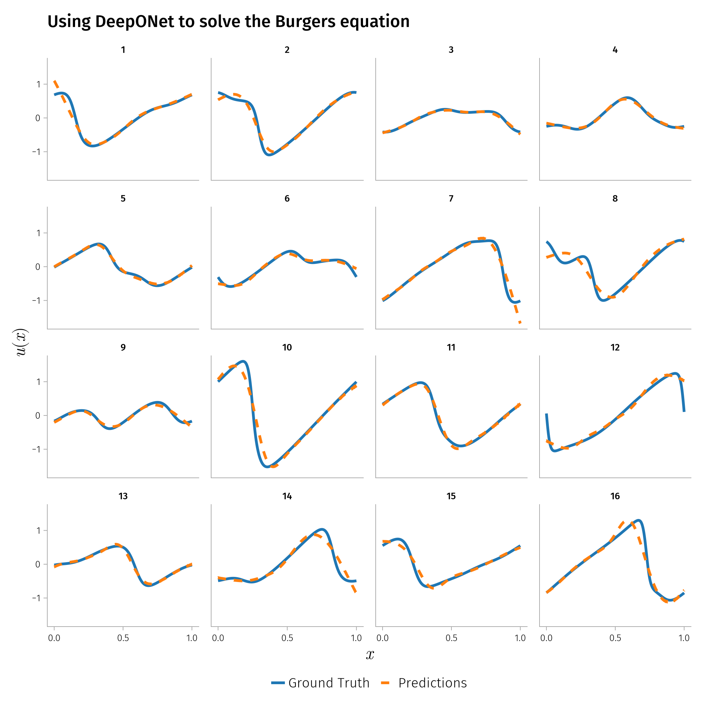

using DataDeps, MAT, MLUtils
using PythonCall, CondaPkg # For `gdown`
using Printf
const gdown = pyimport("gdown")
register(
DataDep(
"Burgers",
"""
Burgers' equation dataset from
[fourier_neural_operator](https://github.com/zongyi-li/fourier_neural_operator)
mapping between initial conditions to the solutions at the last point of time \
evolution in some function space.
u(x,0) -> u(x, time_end):
* `a`: initial conditions u(x,0)
* `u`: solutions u(x,t_end)
""",
"https://drive.google.com/uc?id=16a8od4vidbiNR3WtaBPCSZ0T3moxjhYe",
"9cbbe5070556c777b1ba3bacd49da5c36ea8ed138ba51b6ee76a24b971066ecd";
fetch_method=(url, local_dir) -> begin
pyconvert(String, gdown.download(url, joinpath(local_dir, "Burgers_R10.zip")))
end,
post_fetch_method=unpack,
),
)
filepath = joinpath(datadep"Burgers", "burgers_data_R10.mat")
const N = 2048
const Δsamples = 2^3
const grid_size = div(2^13, Δsamples)
const T = Float32
file = matopen(filepath)
x_data = reshape(T.(collect(read(file, "a")[1:N, 1:Δsamples:end])), N, :)
y_data = reshape(T.(collect(read(file, "u")[1:N, 1:Δsamples:end])), N, :)
close(file)
x_data = permutedims(x_data, (2, 1))
y_data = permutedims(y_data, (2, 1))
grid = reshape(collect(T, range(0, 1; length=grid_size)), 1, :)
1×1024 Matrix{Float32}:
0.0 0.000977517 0.00195503 … 0.997067 0.998045 0.999022 1.0
using Lux, NeuralOperators, Optimisers, Random, Reactant
const cdev = cpu_device()
const xdev = reactant_device(; force=true)
deeponet = DeepONet(;
branch=(size(x_data, 1), ntuple(Returns(32), 5)...),
trunk=(size(grid, 1), ntuple(Returns(32), 5)...),
branch_activation=gelu,
trunk_activation=gelu
)
ps, st = Lux.setup(Random.default_rng(), deeponet) |> xdev;
((layer_1 = (branch = (layer_1 = (layer_1 = (weight = Reactant.ConcretePJRTArray{Float32, 2, 1, Reactant.Sharding.ShardInfo{Reactant.Sharding.NoSharding, Nothing}}(Float32[-0.014341338 0.020755474 … 0.041343406 -0.048623193; 0.0083939815 0.04539665 … -0.051814947 -0.031102348; … ; -0.01996445 0.018629532 … 0.0423207 0.03448865; 0.010217821 0.03554072 … 0.016244058 0.030222533]), bias = Reactant.ConcretePJRTArray{Float32, 1, 1, Reactant.Sharding.ShardInfo{Reactant.Sharding.NoSharding, Nothing}}(Float32[-0.010784257, -0.00854665, -0.003366597, 0.011205982, 0.0019268505, 0.025677986, 0.021019943, -0.027184866, 0.023037232, 0.031113818 … -0.004212614, 0.028965637, 0.0129418485, 0.010267194, 0.027299669, 0.003379576, -0.013163649, 0.0086392015, -0.026260335, -0.0012509003])), layer_2 = (weight = Reactant.ConcretePJRTArray{Float32, 2, 1, Reactant.Sharding.ShardInfo{Reactant.Sharding.NoSharding, Nothing}}(Float32[-0.23273803 0.056379918 … 0.2745468 -0.07108225; -0.09911127 0.07770212 … -0.03992017 0.19846478; … ; -0.29248032 -0.27147883 … -0.07895645 0.059464663; -0.27344045 0.15086871 … 0.22714145 -0.1702456]), bias = Reactant.ConcretePJRTArray{Float32, 1, 1, Reactant.Sharding.ShardInfo{Reactant.Sharding.NoSharding, Nothing}}(Float32[-0.13231434, 0.11597464, -0.038989734, 0.14191133, -0.15950987, 0.019486027, -0.12127273, 0.13773394, -0.14614008, -0.16483426 … -0.16979454, 0.023432236, -0.14377317, 0.040392593, 0.10373829, -0.016988361, 0.13400173, 0.15875885, 0.020654969, -0.06268317])), layer_3 = (weight = Reactant.ConcretePJRTArray{Float32, 2, 1, Reactant.Sharding.ShardInfo{Reactant.Sharding.NoSharding, Nothing}}(Float32[0.18385793 0.15924983 … -0.08262903 -0.16248478; -0.14651902 -0.107956655 … 0.2640388 0.23317637; … ; -0.27458575 -0.015950862 … 0.27575663 0.09468539; -0.13975129 -0.15252043 … -0.26963755 0.0036218825]), bias = Reactant.ConcretePJRTArray{Float32, 1, 1, Reactant.Sharding.ShardInfo{Reactant.Sharding.NoSharding, Nothing}}(Float32[-0.124944754, -0.00014901019, -0.11343822, -0.1254226, 0.12805401, -0.058710814, 0.009165928, 0.1313846, -0.12769628, 0.032743234 … 0.06906528, 0.16697603, 0.043205746, -0.13670944, 0.09429721, 0.16155909, -0.11991963, -0.052137, 0.065647975, -0.08408271])), layer_4 = (weight = Reactant.ConcretePJRTArray{Float32, 2, 1, Reactant.Sharding.ShardInfo{Reactant.Sharding.NoSharding, Nothing}}(Float32[-0.16580904 -0.055432625 … 0.09563425 -0.016934544; -0.09378095 -0.2376153 … 0.0053529795 -0.2099855; … ; -0.00981769 0.2191183 … 0.22689463 0.09239445; 0.2506025 -0.27396405 … 0.21792102 0.12034291]), bias = Reactant.ConcretePJRTArray{Float32, 1, 1, Reactant.Sharding.ShardInfo{Reactant.Sharding.NoSharding, Nothing}}(Float32[0.0028917163, -0.10101272, 0.052337367, 0.09305955, -0.16668704, -0.1404594, -0.099764116, 0.1252343, -0.11756556, -0.11932148 … 0.008244282, 0.17187306, -0.15815337, 0.14518042, -0.114386, -0.011831358, -0.13640673, -0.02988435, 0.12328824, 0.14609076])), layer_5 = (weight = Reactant.ConcretePJRTArray{Float32, 2, 1, Reactant.Sharding.ShardInfo{Reactant.Sharding.NoSharding, Nothing}}(Float32[0.30172715 0.0032702028 … -0.002720436 0.1348581; 0.013655872 -0.22509192 … 0.25631982 -0.13865457; … ; -0.17558397 -0.043512158 … 0.2253076 0.25743815; 0.17654583 0.15709825 … -0.101926304 -0.2900044]), bias = Reactant.ConcretePJRTArray{Float32, 1, 1, Reactant.Sharding.ShardInfo{Reactant.Sharding.NoSharding, Nothing}}(Float32[-0.13744743, -0.058759682, -0.12617128, -0.036411315, -0.021404993, 0.059725963, -0.11772228, -0.09398752, -0.06502742, 0.06513317 … -0.052058186, 0.168459, 0.021121262, -0.029691696, 0.10052449, -0.0104616275, -0.003513825, 0.09171607, 0.0708687, -0.10587088]))), layer_2 = NamedTuple()), trunk = (layer_1 = (weight = Reactant.ConcretePJRTArray{Float32, 2, 1, Reactant.Sharding.ShardInfo{Reactant.Sharding.NoSharding, Nothing}}(Float32[-0.6828811; -0.39669493; … ; -1.5480895; 0.83772427;;]), bias = Reactant.ConcretePJRTArray{Float32, 1, 1, Reactant.Sharding.ShardInfo{Reactant.Sharding.NoSharding, Nothing}}(Float32[-0.02928543, 0.6653247, 0.49334657, 0.2901194, -0.99529195, -0.3680228, 0.5142437, -0.083372, 0.6608106, -0.15027535 … -0.6721251, 0.6879711, 0.11750007, -0.4955963, 0.44117272, 0.31382382, -0.7391269, 0.77709794, 0.03757322, -0.042586684])), layer_2 = (weight = Reactant.ConcretePJRTArray{Float32, 2, 1, Reactant.Sharding.ShardInfo{Reactant.Sharding.NoSharding, Nothing}}(Float32[-0.26965648 0.15161157 … 0.20192051 -0.1255358; 0.17252296 -0.0050637154 … -0.16842537 -0.21822086; … ; 0.15642767 -0.2766373 … -0.21858495 -0.121863104; 0.012394241 -0.1539677 … 0.104400255 -0.18260707]), bias = Reactant.ConcretePJRTArray{Float32, 1, 1, Reactant.Sharding.ShardInfo{Reactant.Sharding.NoSharding, Nothing}}(Float32[0.10882643, 0.061161105, -0.1223676, -0.086357355, 0.0048503648, 0.0679631, -0.1311725, 0.06505967, 0.12748034, 0.1683222 … -0.12703064, -0.17512897, -0.07284676, -0.085199036, 0.046081487, -0.1694796, -0.01826008, 0.09838718, -0.022178283, 0.11514591])), layer_3 = (weight = Reactant.ConcretePJRTArray{Float32, 2, 1, Reactant.Sharding.ShardInfo{Reactant.Sharding.NoSharding, Nothing}}(Float32[0.15305577 0.051601563 … -0.22577317 -0.014280246; 0.2325717 0.29647985 … 0.22189559 -0.26867285; … ; -0.00023469656 0.23655146 … -0.17535086 0.09815981; -0.24678329 0.13520391 … 0.15287499 -0.19120266]), bias = Reactant.ConcretePJRTArray{Float32, 1, 1, Reactant.Sharding.ShardInfo{Reactant.Sharding.NoSharding, Nothing}}(Float32[0.09913213, -0.13753374, 0.14309973, 0.014208693, -0.13073784, -0.15809688, 0.16899778, 0.062262315, 0.055851467, -0.019998638 … 0.1708922, 0.15968494, -0.00693794, -0.018040916, 0.124330334, 0.11099735, 0.12557255, -0.13228814, -0.15624152, -0.102200754])), layer_4 = (weight = Reactant.ConcretePJRTArray{Float32, 2, 1, Reactant.Sharding.ShardInfo{Reactant.Sharding.NoSharding, Nothing}}(Float32[-0.2732029 -0.21711352 … 0.16890094 0.111064106; -0.16954918 -0.0011532616 … 0.15262076 0.12837201; … ; 0.25744286 0.26890442 … -0.29108173 0.049441222; -0.2687616 -0.10778434 … -0.08287114 -0.21430036]), bias = Reactant.ConcretePJRTArray{Float32, 1, 1, Reactant.Sharding.ShardInfo{Reactant.Sharding.NoSharding, Nothing}}(Float32[-0.12716739, -0.043168847, 0.078117095, 0.0674939, -0.14376436, 0.017311713, 0.05306733, -0.111947976, 0.15439604, -0.04529174 … 0.16852038, -0.16472672, 0.11071237, 0.16495799, 0.09528157, -0.1732862, -0.018955482, 0.113821864, -0.12954247, 0.13714749])), layer_5 = (weight = Reactant.ConcretePJRTArray{Float32, 2, 1, Reactant.Sharding.ShardInfo{Reactant.Sharding.NoSharding, Nothing}}(Float32[0.1435217 0.09790095 … -0.1034906 0.04778721; -0.24517535 -0.14573248 … -0.25667372 -0.2502288; … ; -0.093467854 0.29672804 … 0.1028452 0.29076242; -0.06328591 -0.08328129 … -0.14151038 0.20367193]), bias = Reactant.ConcretePJRTArray{Float32, 1, 1, Reactant.Sharding.ShardInfo{Reactant.Sharding.NoSharding, Nothing}}(Float32[0.006720315, 0.052474238, -0.06510432, 0.09124097, -0.15677321, 0.04286794, 0.044270586, -0.03424583, -0.096734285, -0.075719826 … -0.080195546, -0.08801922, 0.117623575, 0.031413164, -0.029669527, -0.07233023, -0.08695719, -0.15252234, 0.11491346, 0.12846997])))), layer_2 = NamedTuple()), (layer_1 = (branch = (layer_1 = (layer_1 = NamedTuple(), layer_2 = NamedTuple(), layer_3 = NamedTuple(), layer_4 = NamedTuple(), layer_5 = NamedTuple()), layer_2 = NamedTuple()), trunk = (layer_1 = NamedTuple(), layer_2 = NamedTuple(), layer_3 = NamedTuple(), layer_4 = NamedTuple(), layer_5 = NamedTuple())), layer_2 = NamedTuple()))
x_data_dev = x_data |> xdev;
y_data_dev = y_data |> xdev;
grid_dev = grid |> xdev;
function train_model!(model, ps, st, data; epochs=5000)
train_state = Training.TrainState(model, ps, st, Adam(0.0001f0))
for epoch in 1:epochs
(_, loss, _, train_state) = Training.single_train_step!(
AutoEnzyme(), MAELoss(), data, train_state; return_gradients=Val(false)
)
if epoch % 100 == 1 || epoch == epochs
@printf("Epoch %d: loss = %.6e\n", epoch, loss)
end
end
return train_state.parameters, train_state.states
end
(ps_trained, st_trained) = train_model!(
deeponet, ps, st, ((x_data_dev, grid_dev), y_data_dev)
)
Epoch 1: loss = 4.163949e-01
Epoch 101: loss = 2.470149e-01
Epoch 201: loss = 1.854439e-01
Epoch 301: loss = 1.674240e-01
Epoch 401: loss = 1.429082e-01
Epoch 501: loss = 1.374654e-01
Epoch 601: loss = 1.346700e-01
Epoch 701: loss = 1.319732e-01
Epoch 801: loss = 1.289727e-01
Epoch 901: loss = 1.256498e-01
Epoch 1001: loss = 1.224329e-01
Epoch 1101: loss = 1.194167e-01
Epoch 1201: loss = 1.155386e-01
Epoch 1301: loss = 1.108444e-01
Epoch 1401: loss = 1.050742e-01
Epoch 1501: loss = 9.946135e-02
Epoch 1601: loss = 9.413841e-02
Epoch 1701: loss = 9.003574e-02
Epoch 1801: loss = 8.673996e-02
Epoch 1901: loss = 8.404745e-02
Epoch 2001: loss = 8.190358e-02
Epoch 2101: loss = 7.958069e-02
Epoch 2201: loss = 7.775457e-02
Epoch 2301: loss = 7.631685e-02
Epoch 2401: loss = 7.474612e-02
Epoch 2501: loss = 7.343528e-02
Epoch 2601: loss = 7.235070e-02
Epoch 2701: loss = 7.132144e-02
Epoch 2801: loss = 7.025428e-02
Epoch 2901: loss = 6.930584e-02
Epoch 3001: loss = 6.836185e-02
Epoch 3101: loss = 6.740461e-02
Epoch 3201: loss = 6.654493e-02
Epoch 3301: loss = 6.554656e-02
Epoch 3401: loss = 6.461777e-02
Epoch 3501: loss = 6.368576e-02
Epoch 3601: loss = 6.278764e-02
Epoch 3701: loss = 6.197550e-02
Epoch 3801: loss = 6.112197e-02
Epoch 3901: loss = 6.030836e-02
Epoch 4001: loss = 5.949539e-02
Epoch 4101: loss = 5.891065e-02
Epoch 4201: loss = 5.792850e-02
Epoch 4301: loss = 5.716292e-02
Epoch 4401: loss = 5.652440e-02
Epoch 4501: loss = 5.570652e-02
Epoch 4601: loss = 5.505635e-02
Epoch 4701: loss = 5.440389e-02
Epoch 4801: loss = 5.381636e-02
Epoch 4901: loss = 5.338798e-02
Epoch 5000: loss = 5.273414e-02
using CairoMakie, AlgebraOfGraphics
const AoG = AlgebraOfGraphics
AoG.set_aog_theme!()
pred = first(
Reactant.with_config(;
convolution_precision=PrecisionConfig.HIGH,
dot_general_precision=PrecisionConfig.HIGH,
) do
@jit(deeponet((x_data_dev, grid_dev), ps_trained, st_trained))
end
) |> cdev
data_sequence, sequence, repeated_grid, label = Float32[], Int[], Float32[], String[]
for i in 1:16
append!(repeated_grid, vcat(vec(grid), vec(grid)))
append!(sequence, repeat([i], grid_size * 2))
append!(label, repeat(["Ground Truth"], grid_size))
append!(label, repeat(["Predictions"], grid_size))
append!(data_sequence, vec(y_data[:, i]))
append!(data_sequence, vec(pred[:, i]))
end
plot_data = (; data_sequence, sequence, repeated_grid, label)
draw(
AoG.data(plot_data) *
mapping(
:repeated_grid => L"x",
:data_sequence => L"u(x)";
color=:label => "",
layout=:sequence => nonnumeric,
linestyle=:label => "",
) *
visual(Lines; linewidth=4),
scales(; Color=(; palette=:tab10), LineStyle = (; palette = [:solid, :dash]));
figure=(;
size=(1024, 1024),
title="Using DeepONet to solve the Burgers equation",
titlesize=25,
),
axis=(; xlabelsize=25, ylabelsize=25),
legend=(; label=L"u(x)", position=:bottom, labelsize=20),
)
